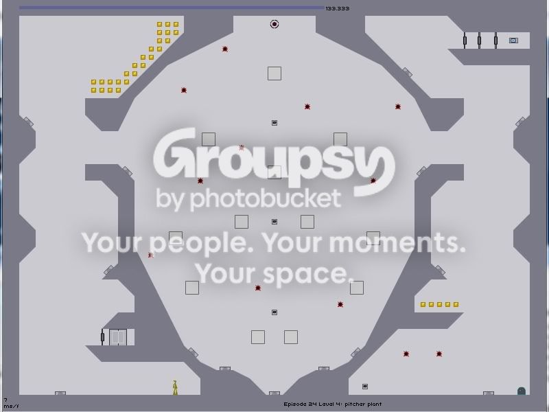

Can someone edit this pic with the best/safest route and/or give me advise on how to complete it please, because I have had to leave it open for about an hour while my dad was on 


Wiki has visual routes for at least the first 40 episodes, with a sparse number of demos mostly copied from George


Lol yesterday I was thinking about but then I said "No I'm not walking out of here without beating this episode... well I only have episode 19 to go in coloumn 2 so I'm go try to beat it today and grab olive if thats correct
Wow, I'm surprised you got through 18-2 without any help. Most people find that a devil of a level to complete. Good going!

(double-click the text block and then copy). There's also two separate diagrams here with a verbal guide (I believe the 2nd was by scythe) if you're struggling with that rocket.